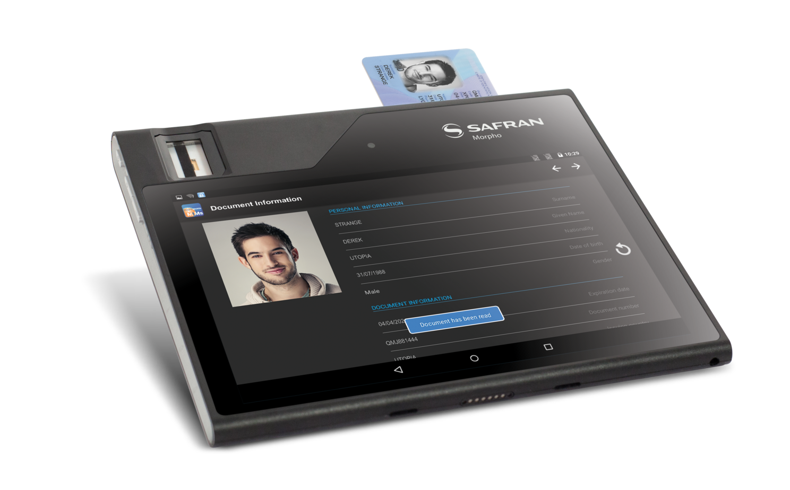

Smart Card sample is basically structured in two major parts:
This is a primary jar which contains all methods related to smart card operations.
Sample application will provide a basic usage of Smart Card by demonstrating the following features:
ISO 716 contact card is used in this sample application.
| Card structure | - MF 3F00 |
| Master File | - 40 01 |
| Elementary File | - 40 01. |
Description – Initialize the Smart Card environment
//class allows you to access the state of USB and communicate with USB devices.
//Currently only host mode is supported in the public API.
private UsbManager mManager;
//This class represents a smart card reader attached to the android device.
private Reader mReader;
// Define a broadcast receiver to receive USB attached and detached broadcast.
private final BroadcastReceiver mReceiver
...
//Initialize above both class objects as below
mManager = (UsbManager) getSystemService(Context.USB_SERVICE);
mReader = new Reader(mManager);Description – Broadcast receiver is a set to detect whenever the card is inserted inside the smart card slot. This function returns true if the card is available inside the slot or false if not.
/** Broadcast receiver to receive USB requested permission actions */
private final BroadcastReceiver mReceiver = new BroadcastReceiver() {
@Override
public void onReceive(Context ctx, Intent intent) {
String action = intent.getAction();
if (ACTION_USB_PERMISSION.equals(action)) {
synchronized (this) {
UsbDevice device = intent.getParcelableExtra(UsbManager.EXTRA_DEVICE);
if (intent.getBooleanExtra(UsbManager.EXTRA_PERMISSION_GRANTED, false)) {
if (device != null) {
updateConsole("Opening reader: "+ device.getDeviceName() + "...");
new OpenSmartCardTask().execute(device);
}
} else {
updateConsole("Permission denied for device "+ device.getDeviceName());
}
}
}
}
};Description – This method is used to Open Smart Card reader
private void openReader() {
// Call init again if no supported device found.
if (supportedSIM == null)
init();
if (supportedSIM != null) {
// For each device
for (UsbDevice device : mManager.getDeviceList().values()) {
if (supportedSIM.equals(device.getDeviceName())) {
// Always request permission to open reader.
// Result will received in broadcast receiver if permission
// granted then try to open reader.
mManager.requestPermission(device, mPermissionIntent);
break;
}
}
} else
updateConsole("No supported card found. Please reinsert card.");
}Description – Give possibility to the smart card to put itself in activated state.
private void performPowerTaskOnSmartCard() {
try {
updateConsole("Power CARD_WARM_RESET");
int slotNum = 0;
//CARD_WARM_RESET prepare reader for APDU transmission.
int actionNum = Reader.CARD_WARM_RESET;
// Give power to SmartCard.
byte[] atr = mReader.power(slotNum, actionNum);
updateConsole("ATR : "+ Utils.toHexString(atr));
isOnceCompleted=true;
} catch (ReaderException re) {
Log.e(TAG, "performPowerTaskOnSmartCard", re);
isOnceCompleted = false;
updateConsole(re.toString());
}
}Description – Used to set protocol on SmartCard
private void setProtocol() {
try {
updateConsole("setting Protocols PROTOCOL_T0 OR PROTOCOL_T1");
//We are setting T0 protocol
int preferredProtocols = Reader.PROTOCOL_T0|Reader.PROTOCOL_T1;
int slotNum = 0;
mReader.setProtocol(slotNum, preferredProtocols);
isOnceCompleted=true;
} catch (ReaderException re) {
Log.e(TAG, "setProtocol", re);
isOnceCompleted = false;
updateConsole(re.toString());
}
}Description – Once the above operations are completed, the card is in activated state. Reading and writing operations can then be performed using this function. Parameters: int slotNum - the slot number. byte[] sendBuffer - the send buffer. int sendBufferLength - the send buffer length. byte[] recvBuffer - the receive buffer. int recvBufferLength - the receive buffer length.
public int transmit(int slotNum,
byte[] sendBuffer,
int sendBufferLength,
byte[] recvBuffer,
int recvBufferLength)
throws ReaderException